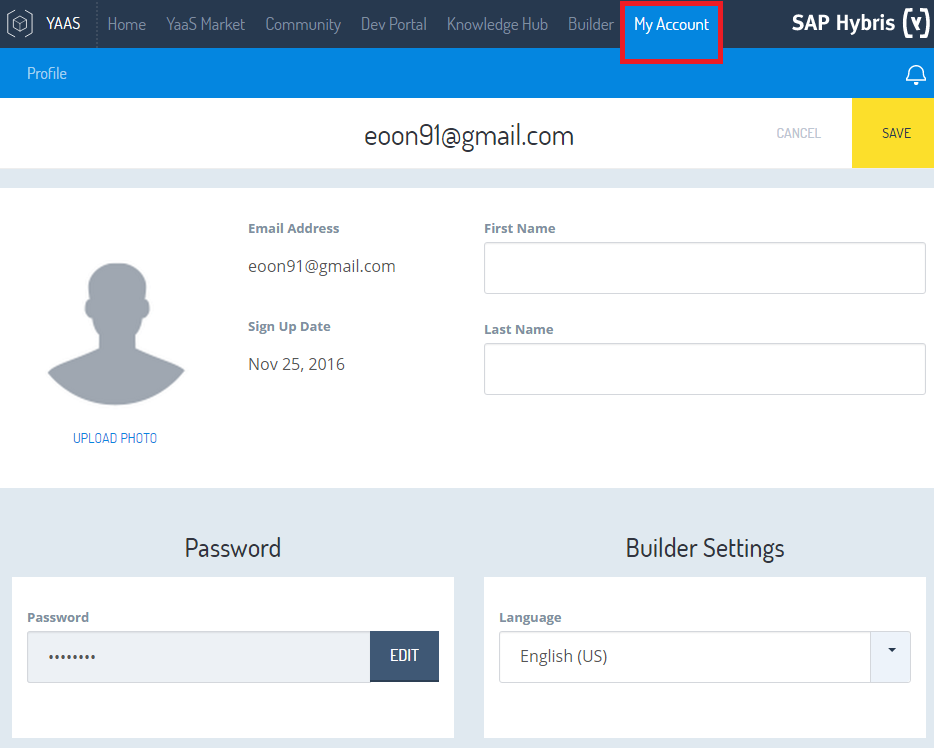
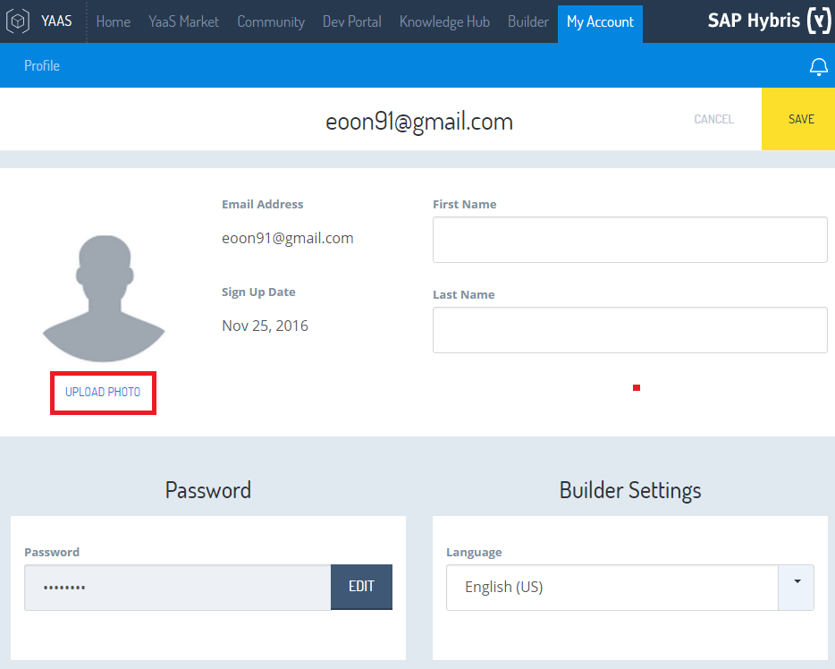
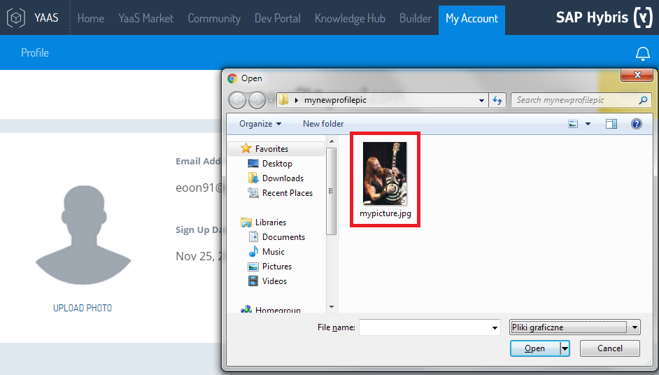
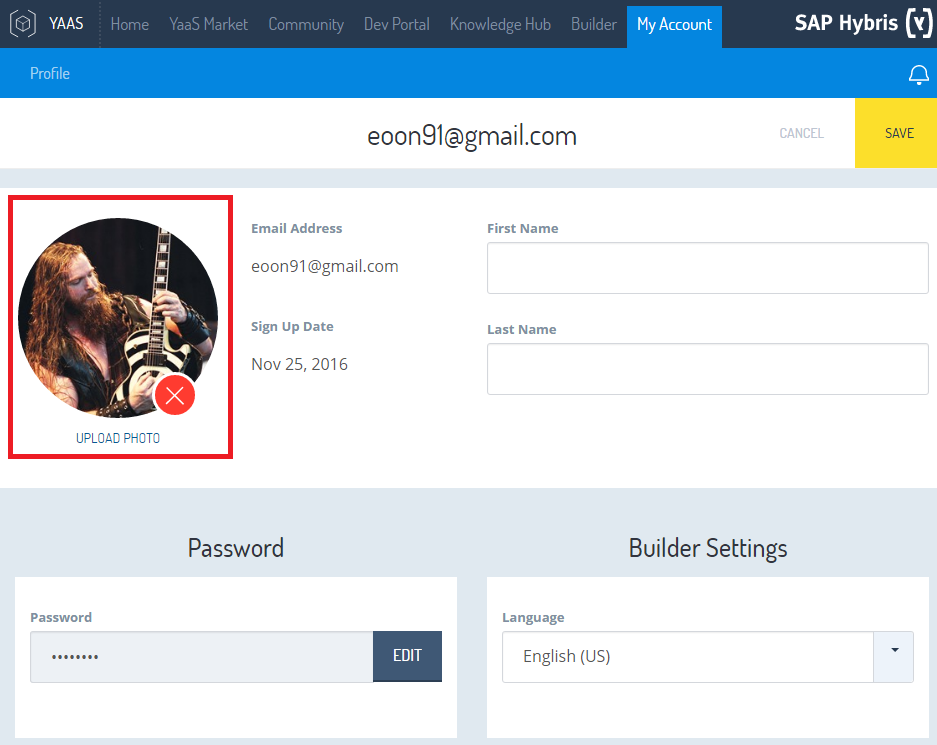
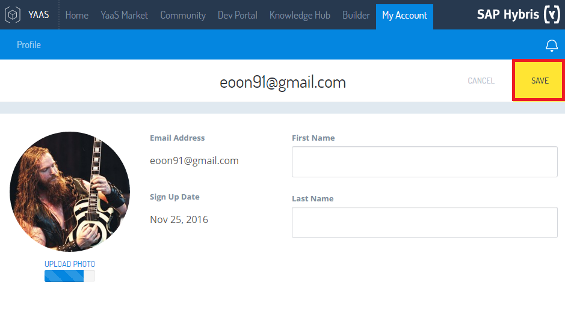
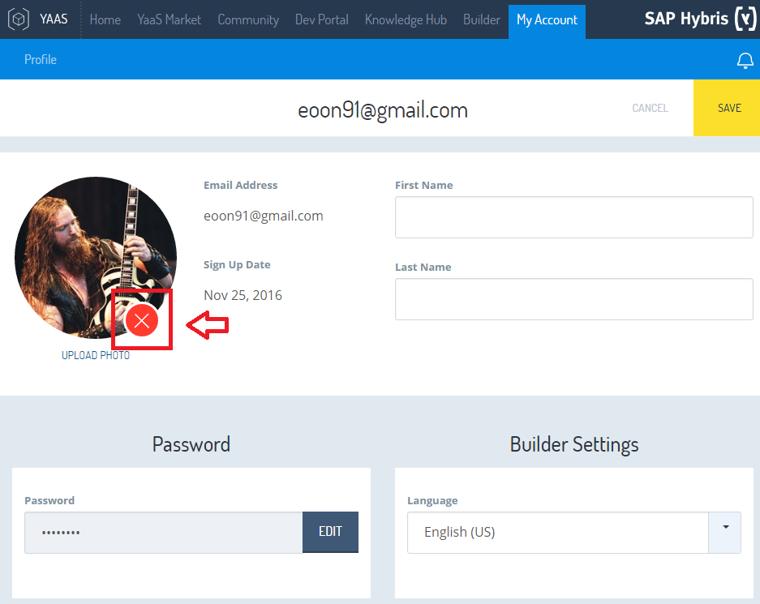

---
title: 'Adding a profile picture in your YaaS profile'
type: 'Tutorial'
---
This tutorial will show you how to add a profile picture to your YaaS user profile.
Make sure you're signed in and follow the steps below. It's easy!
- Click on the "My account" tab. This will take you to your profile settings.

- Click the "Upload photo" button. This will open a new window.

- In the "Open" window, choose a file from your computer.

- Your new profile picture will be displayed right next to your email adress.

- To save the changes click the "Save" button in the upper right corner of the page.

- If you have chosen a wrong image or you simply don't like what you see,
you can click the red "X" button to delete your current profile picture.
Then you can start over from step 1.

TROUBLESHOOTING
If you cannot see the newly uploaded picture, try refreshing the page.
If you're experiencing more complex issues, please describe your problem on the YaaS space on the hybris Experts page
where you're welcome to discuss technical topics.